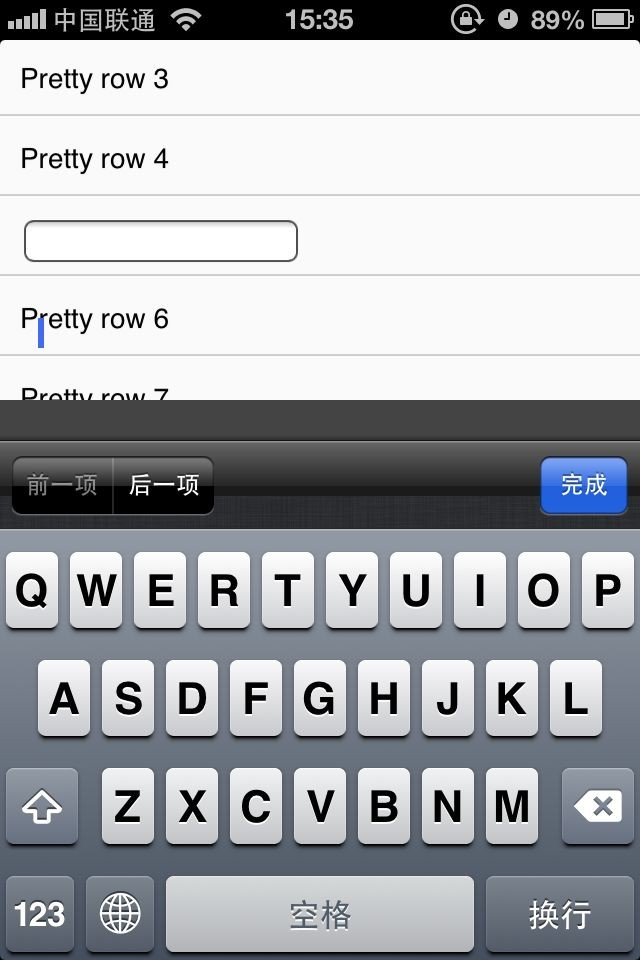
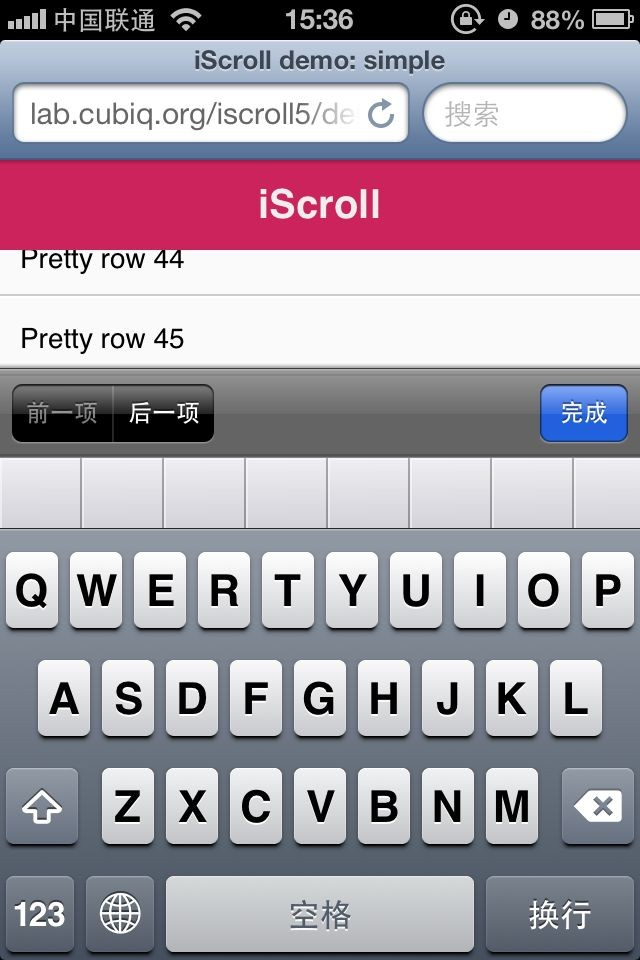
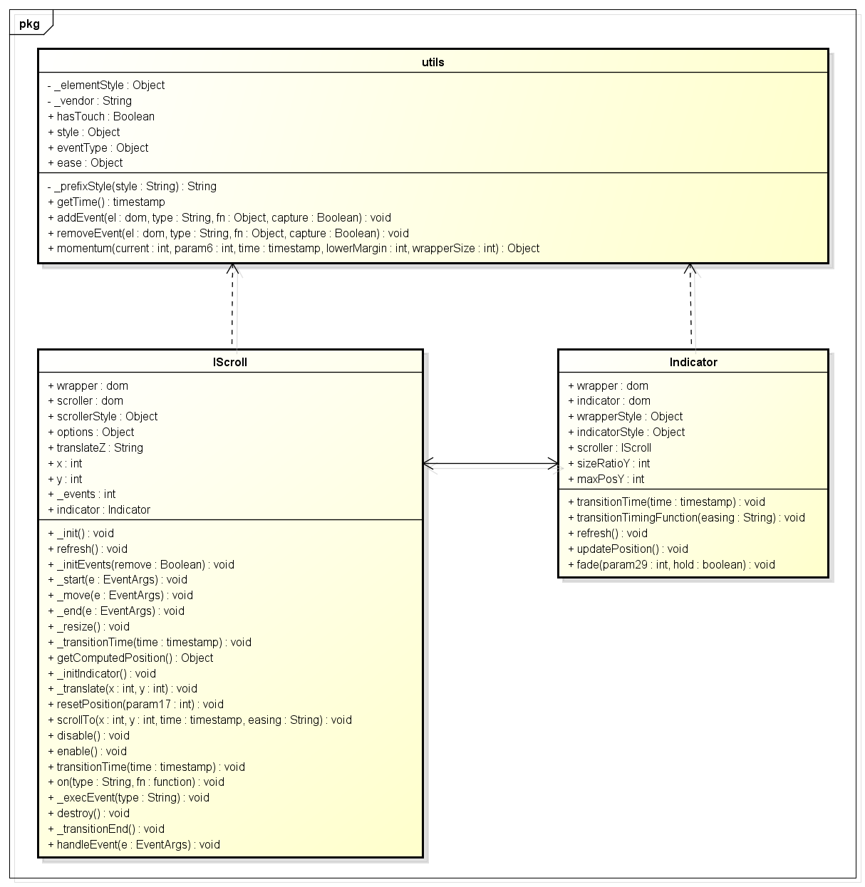

前言
在去年，我们对IScroll的源码进行了学习，并且分离出了一段代码自己使用，在使用学习过程中发现几个致命问题：
① 光标移位
② 文本框找不到（先让文本框获取焦点，再滑动一下，输入文字便可重现）
③ 偶尔导致头部消失，头部可不是fixed哦
 
由于以上问题，加之去年我们团队的工作量极大，和中间一些组织架构调整，这个事情一直被放到了今天，心里一直对此耿耿于怀，因为IScroll让人忘不了的好处
小钗坚信，IScroll可以带来前端体验上的革命，因为他可以解决以下问题
- 区域滑动顺滑感的体验
- 解决fixed移位问题
- 解决动画过程中长短页的问题，并且可以优化view切换动画的顺畅度
我们不能因为一两个小问题而放弃如此牛逼的点子，所以我们要处理其中的问题，那么这些问题是否真的不可解决，而引起这些问题的原因又到底是什么，我们今天来一一探索
抽离IScroll
第一步依旧是抽离IScroll核心逻辑，我们这里先在简单层面上探究问题，以免被旁枝末节的BUG困扰，这里形成的一个库只支持纵向滚动，代码量比较少



1 <!DOCTYPE html PUBLIC "-//W3C//DTD XHTML 1.0 Transitional//EN" "http://www.w3.org/TR/xhtml1/DTD/xhtml1-transitional.dtd"> 2 <html xmlns="http://www.w3.org/1999/xhtml"> 3 <head> 4 <title></title> 5 <meta http-equiv="Content-Type" content="text/html; charset=gb2312" /> 6 <meta name="viewport" content="width=device-width, initial-scale=1.0, user-scalable=0, minimum-scale=1.0, maximum-scale=1.0"> 7 <meta name="keywords" content="" /> 8 <meta name="description" content="" /> 9 <meta name="robots" content="all" /> 10 <style type="text/css"> 11 * { -webkit-box-sizing: border-box; -moz-box-sizing: border-box; box-sizing: border-box; } 12 html { -ms-touch-action: none; } 13 body, ul, li { padding: 0; margin: 0; border: 0; } 14 body { font-size: 12px; font-family: ubuntu, helvetica, arial; overflow: hidden; /* this is important to prevent the whole page to bounce */ } 15 #header { position: absolute; z-index: 2; top: 0; left: 0; width: 100%; height: 45px; line-height: 45px; background: #CD235C; padding: 0; color: #eee; font-size: 20px; text-align: center; font-weight: bold; } 16 #footer { position: absolute; z-index: 2; bottom: 0; left: 0; width: 100%; height: 48px; background: #444; padding: 0; border-top: 1px solid #444; } 17 #wrapper { position: absolute; z-index: 1; top: 45px; bottom: 48px; left: 0; width: 100%; background: #ccc; overflow: hidden; } 18 #scroller { position: absolute; z-index: 1; -webkit-tap-highlight-color: rgba(0,0,0,0); width: 100%; -webkit-transform: translateZ(0); -moz-transform: translateZ(0); -ms-transform: translateZ(0); -o-transform: translateZ(0); transform: translateZ(0); -webkit-touch-callout: none; -webkit-user-select: none; -moz-user-select: none; -ms-user-select: none; user-select: none; -webkit-text-size-adjust: none; -moz-text-size-adjust: none; -ms-text-size-adjust: none; -o-text-size-adjust: none; text-size-adjust: none; } 19 #scroller ul { list-style: none; padding: 0; margin: 0; width: 100%; text-align: left; } 20 #scroller li { padding: 0 10px; height: 40px; line-height: 40px; border-bottom: 1px solid #ccc; border-top: 1px solid #fff; background-color: #fafafa; font-size: 14px; } 21 </style> 22 </head> 23 <body> 24 <div id="header"> 25 iScroll</div> 26 <div id="wrapper"> 27 <div id="scroller"> 28 <ul> 29 <li>Pretty row 1</li> 30 <li>Pretty row 2</li> 31 <li>Pretty row 3</li> 32 <li>Pretty row 4</li> 33 <li> 34 <input type="text"></li> 35 <li>Pretty row 6</li> 36 <li>Pretty row 7</li> 37 <li>Pretty row 8</li> 38 <li> 39 <input type="checkbox"></li> 40 <li>Pretty row 10</li> 41 <li>Pretty row 11</li> 42 <li>Pretty row 12</li> 43 <li> 44 <input type="radio"></li> 45 <li>Pretty row 14</li> 46 <li>Pretty row 15</li> 47 <li>Pretty row 16</li> 48 <li> 49 <textarea></textarea></li> 50 <li>Pretty row 18</li> 51 <li>Pretty row 19</li> 52 <li>Pretty row 20</li> 53 <li> 54 <select> 55 <option>option</option> 56 </select></li> 57 <li>Pretty row 22</li> 58 <li>Pretty row 23</li> 59 <li>Pretty row 24</li> 60 <li>Pretty row 25</li> 61 <li>Pretty row 26</li> 62 <li>Pretty row 27</li> 63 <li>Pretty row 28</li> 64 <li>Pretty row 29</li> 65 <li>Pretty row 30</li> 66 <li>Pretty row 31</li> 67 <li>Pretty row 32</li> 68 <li>Pretty row 33</li> 69 <li>Pretty row 34</li> 70 <li>Pretty row 35</li> 71 <li>Pretty row 36</li> 72 <li>Pretty row 37</li> 73 <li>Pretty row 38</li> 74 <li>Pretty row 39</li> 75 <li>Pretty row 40</li> 76 <li>Pretty row 41</li> 77 <li>Pretty row 42</li> 78 <li>Pretty row 43</li> 79 <li>Pretty row 44</li> 80 <li>Pretty row 45</li> 81 <li>Pretty row 46</li> 82 <li>Pretty row 47</li> 83 <li>Pretty row 48</li> 84 <li>Pretty row 49</li> 85 <li>Pretty row 50</li> 86 </ul> 87 </div> 88 </div> 89 <div id="footer"> 90 </div> 91 <script src="../../zepto/zepto.js" type="text/javascript"></script> 92 <script src="../../fastclick-1.0.0/lib/fastclick.js" type="text/javascript"></script> 93 <script type="text/javascript" src="c.ui.scroll.js"></script> 94 <script type="text/javascript"> 95 96 var s = new IScroll({ 97 wrapper: $('#wrapper'), 98 scroller: $('#scroller') 99 100 }); 101 102 new FastClick(document.body); 103 104 </script> 105 </body> 106 </html>
1 var utils = (function () { 2 var me = {}; 3 var _elementStyle = document.createElement('div').style; 4 5 //获得需要兼容CSS3前缀 6 var _vendor = (function () { 7 var vendors = ['t', 'webkitT', 'MozT', 'msT', 'OT']; 8 var transform; 9 var i = 0; 10 var l = vendors.length; 11 12 for (; i < l; i++) { 13 transform = vendors[i] + 'ransform'; 14 if (transform in _elementStyle) return vendors[i].substr(0, vendors[i].length - 1); 15 } 16 return false; 17 })(); 18 19 //获取样式（CSS3兼容） 20 function _prefixStyle(style) { 21 if (_vendor === false) return false; 22 if (_vendor === '') return style; 23 return _vendor + style.charAt(0).toUpperCase() + style.substr(1); 24 } 25 26 me.getTime = Date.now || function getTime() { return new Date().getTime(); }; 27 28 me.addEvent = function (el, type, fn, capture) { 29 if (el[0]) el = el[0]; 30 el.addEventListener(type, fn, !!capture); 31 }; 32 33 me.removeEvent = function (el, type, fn, capture) { 34 if (el[0]) el = el[0]; 35 el.removeEventListener(type, fn, !!capture); 36 }; 37 38 /* 39 current：当前鼠标位置 40 start：touchStart时候记录的Y（可能是X）的开始位置，但是在touchmove时候可能被重写 41 time： touchstart到手指离开时候经历的时间，同样可能被touchmove重写 42 lowerMargin：y可移动的最大距离，这个一般为计算得出 this.wrapperHeight - this.scrollerHeight 43 wrapperSize：如果有边界距离的话就是可拖动，不然碰到0的时候便停止 44 */ 45 me.momentum = function (current, start, time, lowerMargin, wrapperSize) { 46 var distance = current - start, 47 speed = Math.abs(distance) / time, 48 destination, 49 duration, 50 deceleration = 0.0006; 51 52 destination = current + (speed * speed) / (2 * deceleration) * (distance < 0 ? -1 : 1); 53 duration = speed / deceleration; 54 55 if (destination < lowerMargin) { 56 destination = wrapperSize ? lowerMargin - (wrapperSize / 2.5 * (speed / 8)) : lowerMargin; 57 distance = Math.abs(destination - current); 58 duration = distance / speed; 59 } else if (destination > 0) { 60 destination = wrapperSize ? wrapperSize / 2.5 * (speed / 8) : 0; 61 distance = Math.abs(current) + destination; 62 duration = distance / speed; 63 } 64 65 return { 66 destination: Math.round(destination), 67 duration: duration 68 }; 69 70 }; 71 72 $.extend(me, { 73 hasTouch: 'ontouchstart' in window 74 }); 75 76 77 //我们暂时只判断touch 和 mouse即可 78 $.extend(me.style = {}, { 79 transform: _prefixStyle('transform'), 80 transitionTimingFunction: _prefixStyle('transitionTimingFunction'), 81 transitionDuration: _prefixStyle('transitionDuration'), 82 transitionDelay: _prefixStyle('transitionDelay'), 83 transformOrigin: _prefixStyle('transformOrigin') 84 }); 85 86 $.extend(me.eventType = {}, { 87 touchstart: 1, 88 touchmove: 1, 89 touchend: 1, 90 91 mousedown: 2, 92 mousemove: 2, 93 mouseup: 2 94 }); 95 96 $.extend(me.ease = {}, { 97 quadratic: { 98 style: 'cubic-bezier(0.25, 0.46, 0.45, 0.94)', 99 fn: function (k) { 100 return k * (2 - k); 101 } 102 }, 103 circular: { 104 style: 'cubic-bezier(0.1, 0.57, 0.1, 1)', // Not properly "circular" but this looks better, it should be (0.075, 0.82, 0.165, 1) 105 fn: function (k) { 106 return Math.sqrt(1 - (--k * k)); 107 } 108 }, 109 back: { 110 style: 'cubic-bezier(0.175, 0.885, 0.32, 1.275)', 111 fn: function (k) { 112 var b = 4; 113 return (k = k - 1) * k * ((b + 1) * k + b) + 1; 114 } 115 }, 116 bounce: { 117 style: '', 118 fn: function (k) { 119 if ((k /= 1) < (1 / 2.75)) { 120 return 7.5625 * k * k; 121 } else if (k < (2 / 2.75)) { 122 return 7.5625 * (k -= (1.5 / 2.75)) * k + 0.75; 123 } else if (k < (2.5 / 2.75)) { 124 return 7.5625 * (k -= (2.25 / 2.75)) * k + 0.9375; 125 } else { 126 return 7.5625 * (k -= (2.625 / 2.75)) * k + 0.984375; 127 } 128 } 129 }, 130 elastic: { 131 style: '', 132 fn: function (k) { 133 var f = 0.22, 134 e = 0.4; 135 136 if (k === 0) { return 0; } 137 if (k == 1) { return 1; } 138 139 return (e * Math.pow(2, -10 * k) * Math.sin((k - f / 4) * (2 * Math.PI) / f) + 1); 140 } 141 } 142 }); 143 return me; 144 })(); 145 146 function IScroll(opts) { 147 this.wrapper = typeof opts.wrapper == 'string' ? $(opts.wrapper) : opts.wrapper; 148 this.scroller = typeof opts.scroller == 'string' ? $(opts.scroller) : opts.scroller; 149 if (!opts.wrapper[0] || !opts.scroller[0]) throw 'param error'; 150 151 this.wrapper = this.wrapper[0]; 152 this.scroller = this.scroller[0]; 153 154 //这个属性会被动态改变的，如果这里 155 this.scrollerStyle = this.scroller.style; 156 157 this.options = { 158 //是否具有滚动条 159 scrollbars: true, 160 // 其实时期Y的位置 161 startY: 0, 162 //超出边界还原时间点 163 bounceTime: 600, 164 //超出边界返回的动画 165 bounceEasing: utils.ease.circular, 166 167 //超出边界时候是否还能拖动 168 bounce: true, 169 170 bindToWrapper: true, 171 172 //当window触发resize事件60ms后还原 173 resizePolling: 60, 174 startX: 0, 175 startY: 0 176 }; 177 178 for (var i in opts) { 179 this.options[i] = opts[i]; 180 } 181 182 this.translateZ = ' translateZ(0)'; 183 184 this.x = 0; 185 this.y = 0; 186 this._events = {}; 187 this._init(); 188 189 //更新滚动条位置 190 this.refresh(); 191 192 //更新本身位置 193 this.scrollTo(this.options.startX, this.options.startY); 194 195 this.enable(); 196 197 }; 198 199 IScroll.prototype = { 200 _init: function () { 201 this._initEvents(); 202 203 //初始化滚动条，滚动条此处需要做重要处理 204 if (this.options.scrollbars) { 205 this._initIndicator(); 206 } 207 }, 208 refresh: function () { 209 var rf = this.wrapper.offsetHeight; // Force reflow 210 211 this.wrapperHeight = this.wrapper.clientHeight; 212 this.scrollerHeight = this.scroller.offsetHeight; 213 this.maxScrollY = this.wrapperHeight - this.scrollerHeight; 214 215 this.endTime = 0; 216 217 this._execEvent('refresh'); 218 219 this.resetPosition(); 220 221 }, 222 _initEvents: function (remove) { 223 var eventType = remove ? utils.removeEvent : utils.addEvent; 224 var target = this.options.bindToWrapper ? this.wrapper : window; 225 226 eventType(window, 'orientationchange', this); 227 eventType(window, 'resize', this); 228 229 if (utils.hasTouch) { 230 eventType(this.wrapper, 'touchstart', this); 231 eventType(target, 'touchmove', this); 232 eventType(target, 'touchcancel', this); 233 eventType(target, 'touchend', this); 234 } else { 235 eventType(this.wrapper, 'mousedown', this); 236 eventType(target, 'mousemove', this); 237 eventType(target, 'mousecancel', this); 238 eventType(target, 'mouseup', this); 239 } 240 241 eventType(this.scroller, 'transitionend', this); 242 eventType(this.scroller, 'webkitTransitionEnd', this); 243 eventType(this.scroller, 'oTransitionEnd', this); 244 eventType(this.scroller, 'MSTransitionEnd', this); 245 }, 246 _start: function (e) { 247 if (!this.enabled || (this.initiated && utils.eventType[e.type] !== this.initiated)) { 248 return; 249 } 250 251 var point = e.touches ? e.touches[0] : e, pos; 252 this.initiated = utils.eventType[e.type]; 253 254 this.moved = false; 255 256 this.distY = 0; 257 258 //开启动画时间，如果之前有动画的话，便要停止动画，这里因为没有传时间，所以动画便直接停止了 259 this._transitionTime(); 260 261 this.startTime = utils.getTime(); 262 263 //如果正在进行动画，需要停止，并且触发滑动结束事件 264 if (this.isInTransition) { 265 this.isInTransition = false; 266 pos = this.getComputedPosition(); 267 var _x = Math.round(pos.x); 268 var _y = Math.round(pos.y); 269 270 if (_y < 0 && _y > this.maxScrollY && this.options.adjustXY) { 271 _y = this.options.adjustXY.call(this, _x, _y).y; 272 } 273 274 //移动过去 275 this._translate(_x, _y); 276 this._execEvent('scrollEnd'); 277 } 278 279 this.startX = this.x; 280 this.startY = this.y; 281 this.absStartX = this.x; 282 this.absStartY = this.y; 283 this.pointX = point.pageX; 284 this.pointY = point.pageY; 285 286 this._execEvent('beforeScrollStart'); 287 288 e.preventDefault(); 289 290 }, 291 292 _move: function (e) { 293 if (!this.enabled || utils.eventType[e.type] !== this.initiated) { 294 return; 295 } 296 e.preventDefault(); 297 298 var point = e.touches ? e.touches[0] : e, 299 deltaX = point.pageX - this.pointX, 300 deltaY = point.pageY - this.pointY, 301 timestamp = utils.getTime(), 302 newX, newY, 303 absDistX, absDistY; 304 305 this.pointX = point.pageX; 306 this.pointY = point.pageY; 307 308 this.distX += deltaX; 309 this.distY += deltaY; 310 absDistX = Math.abs(this.distX); 311 absDistY = Math.abs(this.distY); 312 313 // 如果一直按着没反应的话这里就直接返回了 314 if (timestamp - this.endTime > 300 && (absDistX < 10 && absDistY < 10)) { 315 return; 316 } 317 318 newY = this.y + deltaY; 319 320 if (newY > 0 || newY < this.maxScrollY) { 321 newY = this.options.bounce ? this.y + deltaY / 3 : newY > 0 ? 0 : this.maxScrollY; 322 } 323 324 if (!this.moved) { 325 this._execEvent('scrollStart'); 326 } 327 328 this.moved = true; 329 330 this._translate(0, newY); 331 332 if (timestamp - this.startTime > 300) { 333 this.startTime = timestamp; 334 this.startX = this.x; 335 this.startY = this.y; 336 } 337 338 339 }, 340 _end: function (e) { 341 342 if (!this.enabled || utils.eventType[e.type] !== this.initiated) { 343 return; 344 } 345 346 var point = e.changedTouches ? e.changedTouches[0] : e, 347 momentumY, 348 duration = utils.getTime() - this.startTime, 349 newX = Math.round(this.x), 350 newY = Math.round(this.y), 351 distanceX = Math.abs(newX - this.startX), 352 distanceY = Math.abs(newY - this.startY), 353 time = 0, 354 easing = ''; 355 356 this.isInTransition = 0; 357 this.initiated = 0; 358 this.endTime = utils.getTime(); 359 360 if (this.resetPosition(this.options.bounceTime)) { 361 return; 362 } 363 364 this.scrollTo(newX, newY); 365 if (!this.moved) { 366 //click 的情况 367 368 this._execEvent('scrollCancel'); 369 return; 370 } 371 372 if (duration < 300) { 373 374 momentumY = utils.momentum(this.y, this.startY, duration, this.maxScrollY, this.options.bounce ? this.wrapperHeight : 0); 375 // newX = momentumX.destination; 376 newY = momentumY.destination; 377 time = Math.max(momentumY.duration); 378 this.isInTransition = 1; 379 } 380 381 if (newY != this.y) { 382 if (newY > 0 || newY < this.maxScrollY) { 383 easing = utils.ease.quadratic; 384 } 385 386 this.scrollTo(newX, newY, time, easing); 387 return; 388 } 389 390 this._execEvent('scrollEnd'); 391 }, 392 393 _resize: function () { 394 var that = this; 395 396 clearTimeout(this.resizeTimeout); 397 398 this.resizeTimeout = setTimeout(function () { 399 that.refresh(); 400 }, this.options.resizePolling); 401 }, 402 403 _transitionTimingFunction: function (easing) { 404 this.scrollerStyle[utils.style.transitionTimingFunction] = easing; 405 406 this.indicator && this.indicator.transitionTimingFunction(easing); 407 }, 408 409 //开始或者停止动画 410 _transitionTime: function (time) { 411 time = time || 0; 412 this.scrollerStyle[utils.style.transitionDuration] = time + 'ms'; 413 414 //滚动条，我们这里只会出现一个滚动条就不搞那么复杂了 415 this.indicator && this.indicator.transitionTime(time); 416 417 }, 418 419 getComputedPosition: function () { 420 var matrix = window.getComputedStyle(this.scroller, null), x, y; 421 422 matrix = matrix[utils.style.transform].split(')')[0].split(', '); 423 x = +(matrix[12] || matrix[4]); 424 y = +(matrix[13] || matrix[5]); 425 426 return { x: x, y: y }; 427 }, 428 429 _initIndicator: function () { 430 //滚动条 431 var el = createDefaultScrollbar(); 432 this.wrapper.appendChild(el); 433 this.indicator = new Indicator(this, { el: el }); 434 435 this.on('scrollEnd', function () { 436 this.indicator.fade(); 437 }); 438 439 var scope = this; 440 this.on('scrollCancel', function () { 441 scope.indicator.fade(); 442 }); 443 444 this.on('scrollStart', function () { 445 scope.indicator.fade(1); 446 }); 447 448 this.on('beforeScrollStart', function () { 449 scope.indicator.fade(1, true); 450 }); 451 452 this.on('refresh', function () { 453 scope.indicator.refresh(); 454 }); 455 456 }, 457 458 //移动x，y这里比较简单就不分离y了 459 _translate: function (x, y) { 460 this.scrollerStyle[utils.style.transform] = 'translate(' + x + 'px,' + y + 'px)' + this.translateZ; 461 462 this.x = x; 463 this.y = y; 464 465 if (this.options.scrollbars) { 466 this.indicator.updatePosition(); 467 } 468 469 }, 470 471 resetPosition: function (time) { 472 var x = this.x, 473 y = this.y; 474 475 time = time || 0; 476 477 if (this.y > 0) { 478 y = 0; 479 } else if (this.y < this.maxScrollY) { 480 y = this.maxScrollY; 481 } 482 483 if (y == this.y) { 484 return false; 485 } 486 487 this.scrollTo(x, y, time, this.options.bounceEasing); 488 489 return true; 490 }, 491 492 //移动 493 scrollTo: function (x, y, time, easing) { 494 495 // //l_wang 必须项目高度的整数 496 // if (y < 0 && y > this.maxScrollY && this.options.adjustXY) { 497 // y = this.options.adjustXY.call(this, x, y).y; 498 // } 499 500 501 if (this.options.adjustXY) { 502 y = this.options.adjustXY.call(this, x, y).y; 503 } 504 505 //l_wang 验证该项是否可选 506 if (this.options.checkSelected) { 507 y = this.options.checkSelected.call(this, x, y).y; 508 } 509 510 easing = easing || utils.ease.circular; 511 512 this.isInTransition = time > 0; 513 514 if (!time || easing.style) { 515 this._transitionTimingFunction(easing.style); 516 this._transitionTime(time); 517 this._translate(x, y); 518 } 519 }, 520 521 //统一的关闭接口 522 disable: function () { 523 this.enabled = false; 524 }, 525 //统一的open接口 526 enable: function () { 527 this.enabled = true; 528 }, 529 530 on: function (type, fn) { 531 if (!this._events[type]) { 532 this._events[type] = []; 533 } 534 535 this._events[type].push(fn); 536 }, 537 538 _execEvent: function (type) { 539 if (!this._events[type]) { 540 return; 541 } 542 543 var i = 0, 544 l = this._events[type].length; 545 546 if (!l) { 547 return; 548 } 549 550 for (; i < l; i++) { 551 this._events[type][i].call(this); 552 } 553 }, 554 destroy: function () { 555 this._initEvents(true); 556 this._execEvent('destroy'); 557 this.indicator && this.indicator.destroy(); 558 559 console.log('destroy') 560 561 }, 562 563 _transitionEnd: function (e) { 564 if (e.target != this.scroller || !this.isInTransition) { 565 return; 566 } 567 568 this._transitionTime(); 569 if (!this.resetPosition(this.options.bounceTime)) { 570 this.isInTransition = false; 571 this._execEvent('scrollEnd'); 572 } 573 }, 574 575 //事件具体触发点 576 handleEvent: function (e) { 577 switch (e.type) { 578 case 'touchstart': 579 case 'mousedown': 580 this._start(e); 581 break; 582 case 'touchmove': 583 case 'mousemove': 584 this._move(e); 585 break; 586 case 'touchend': 587 case 'mouseup': 588 case 'touchcancel': 589 case 'mousecancel': 590 this._end(e); 591 break; 592 case 'orientationchange': 593 case 'resize': 594 this._resize(); 595 break; 596 case 'transitionend': 597 case 'webkitTransitionEnd': 598 case 'oTransitionEnd': 599 case 'MSTransitionEnd': 600 this._transitionEnd(e); 601 break; 602 } 603 } 604 605 }; 606 607 function createDefaultScrollbar() { 608 var scrollbar = document.createElement('div'), 609 indicator = document.createElement('div'); 610 611 scrollbar.style.cssText = 'position:absolute;z-index:9999'; 612 scrollbar.style.cssText += ';width:7px;bottom:2px;top:2px;right:1px'; 613 scrollbar.style.cssText += ';overflow:hidden'; 614 615 indicator.style.cssText = '-webkit-box-sizing:border-box;-moz-box-sizing:border-box;box-sizing:border-box;position:absolute;background:rgba(0,0,0,0.5);border:1px solid rgba(255,255,255,0.9);border-radius:3px'; 616 indicator.style.width = '100%'; 617 618 scrollbar.appendChild(indicator); 619 620 return scrollbar; 621 } 622 623 function Indicator(scroller, opts) { 624 this.wrapper = typeof opts.el == 'string' ? document.querySelector(opts.el) : opts.el; 625 this.indicator = this.wrapper.children[0]; 626 627 this.wrapperStyle = this.wrapper.style; 628 this.indicatorStyle = this.indicator.style; 629 this.scroller = scroller; 630 631 this.sizeRatioY = 1; 632 this.maxPosY = 0; 633 634 this.wrapperStyle[utils.style.transform] = this.scroller.translateZ; 635 this.wrapperStyle[utils.style.transitionDuration] = '0ms'; 636 //this.wrapperStyle.opacity = '0'; 637 } 638 639 Indicator.prototype = { 640 transitionTime: function (time) { 641 time = time || 0; 642 this.indicatorStyle[utils.style.transitionDuration] = time + 'ms'; 643 }, 644 transitionTimingFunction: function (easing) { 645 this.indicatorStyle[utils.style.transitionTimingFunction] = easing; 646 }, 647 refresh: function () { 648 649 this.transitionTime(); 650 651 var r = this.wrapper.offsetHeight; // force refresh 652 653 this.wrapperHeight = this.wrapper.clientHeight; 654 655 656 this.indicatorHeight = Math.max(Math.round(this.wrapperHeight * this.wrapperHeight / (this.scroller.scrollerHeight || this.wrapperHeight || 1)), 8); 657 this.indicatorStyle.height = this.indicatorHeight + 'px'; 658 659 660 this.maxPosY = this.wrapperHeight - this.indicatorHeight; 661 this.sizeRatioY = (this.scroller.maxScrollY && (this.maxPosY / this.scroller.maxScrollY)); 662 663 this.updatePosition(); 664 }, 665 destroy: function () { 666 this.wrapper.remove(); 667 }, 668 updatePosition: function () { 669 var y = Math.round(this.sizeRatioY * this.scroller.y) || 0; 670 this.y = y; 671 672 //不需要兼容方式了 673 this.indicatorStyle[utils.style.transform] = 'translate(0px,' + y + 'px)' + this.scroller.translateZ; 674 675 }, 676 fade: function (val, hold) { 677 if (hold && !this.visible) { 678 return; 679 } 680 681 clearTimeout(this.fadeTimeout); 682 this.fadeTimeout = null; 683 684 var time = val ? 250 : 500, 685 delay = val ? 0 : 300; 686 687 val = val ? '1' : '0'; 688 689 this.wrapperStyle[utils.style.transitionDuration] = time + 'ms'; 690 691 this.fadeTimeout = setTimeout($.proxy(function (val) { 692 this.wrapperStyle.opacity = val; 693 this.visible = +val; 694 }, this), delay); 695 696 } 697 }; 698 699 IScroll.utils = utils;
代码中引入了fastclick解决其移动端点击问题，demo效果在此：
9573907843705.jpg
基本代码出来了，我们现在来一个个埋坑，首先解决难的问题！
光标跳动/文本框消失
光标跳动是什么现象大家都知道了，至于导致的原因又我们测试下来，即可确定罪魁祸首为：transform，于是我们看看滑动过程中发生了什么
① 每次滑动会涉及到位置的变化
this._translate(0, newY);
② 每次变化会改变transform属性
1 //移动x，y这里比较简单就不分离y了 2 _translate: function (x, y) { 3 this.scrollerStyle[utils.style.transform] = 'translate(' + x + 'px,' + y + 'px)' + this.translateZ; 4 5 this.x = x; 6 this.y = y; 7 8 if (this.options.scrollbars) { 9 this.indicator.updatePosition(); 10 } 11 12 },
我们这里做一次剥离，将transform改成直接改变top值看看效果
this.scrollerStyle['top'] = y + 'px';
而事实证明，一旦去除transform属性，我们这里便不再有光标闪动的问题了。
更进一步的分析，实验，你会发现其实引起的原因是这句：
// this.scrollerStyle[utils.style.transform] = 'translate(' + x + 'px,' + y + 'px)' + this.translateZ; this.scrollerStyle[utils.style.transform] = 'translate(' + x + 'px,' + y + 'px)' ;
没错，就是css3d加速引起的，他的优势是让动画变得顺畅，却不曾想到会引起文本框光标闪烁的问题
针对ios闪烁有一个神奇的属性是
-webkit-backface-visibility: hidden;
于是加入到，scroller元素上后观察之，无效，舍弃该方案再来就是一些怪办法了：
滑动隐藏虚拟键盘
文本获取焦点的情况下，会隐藏虚拟键盘，连焦点都没有了，这个问题自然不药而愈，于是我们只要滑动便让其失去焦点，这样似乎狡猾的绕过了这个问题
在touchmove逻辑处加入以下逻辑
1 //暂时只考虑input问题，有效再扩展 2 var el = document.activeElement; 3 if (el.nodeName.toLowerCase() == 'input') { 4 el.blur(); 5 this.disable(); 6 setTimeout($.proxy(function () { 7 this.enable(); 8 }, this), 250); 9 return; 10 }
该方案最为简单粗暴，他在我们意图滑动时便直接导致虚拟键盘失效，从而根本不会滑动，便错过了光标跳动的问题
甚至，解决了由于滚动导致的文本框消失问题！！！
其中有一个250ms的延时，这个期间是虚拟键盘隐藏所用时间，这个时间段将不可对IScroll进行操作，该方案实验下来效果还行
其中这个延时在200-300之间比较符合人的操作习惯，不设置滚动区域会乱闪，取什么值各位自己去尝试，测试地址：
http://sandbox.runjs.cn/show/8nkmlmz5
这个方案是我觉得最优的方案，其是否接受还要看产品态度
死磕-重写_translate
_translate是IScroll滑动的总控，这里默认是使用transform进行移动，但若是获取焦点的情况下我们可以具有不一样的方案
在文本框具有焦点是，我们使用top代替transform！
PS：这是个烂方法不建议采用
1 //移动x，y这里比较简单就不分离y了 2 _translate: function (x, y) { 3 4 var el = document.activeElement; 5 if (el.nodeName.toLowerCase() == 'input') { 6 this.scrollerStyle['top'] = y + 'px'; 7 } else { 8 this.scrollerStyle[utils.style.transform] = 'translate(' + x + 'px,' + y + 'px)' + this.translateZ; 9 } 10 11 this.x = x; 12 this.y = y; 13 14 if (this.options.scrollbars) { 15 this.indicator.updatePosition(); 16 } 17 18 },
该方案被测试确实可行，不会出现光标闪的现象，但是有一个问题却需要我们处理，便是一旦文本框失去焦点，我们要做top与transform的换算
所以这是一个烂方法！！！这里换算事实上也不难，就是将top值重新归还transform，但是整个这个逻辑却是让人觉得别扭
而且我们这里还需要一个定时器去做计算，判断何时文本框失去焦点，整个这个逻辑就是一个字 坑！
1 //移动x，y这里比较简单就不分离y了 2 _translate: function (x, y) { 3 4 var el = document.activeElement; 5 if (el.nodeName.toLowerCase() == 'input') { 6 this.scrollerStyle['top'] = y + 'px'; 7 8 //便需要做距离换算相关清理，一旦文本框事情焦点，我们要做top值还原 9 if (!this.TimerSrc) { 10 this.TimerSrc = setInterval($.proxy(function () { 11 var el = document.activeElement; 12 if (el.nodeName.toLowerCase() != 'input') { 13 14 pos = this.getComputedPosition(); 15 16 var top = $(scroller).css('top'); 17 this.scrollerStyle['top'] = '0px'; 18 console.log(pos); 19 20 var _x = Math.round(pos.x); 21 var _y = Math.round(pos.y); 22 _y = _y + parseInt(top); 23 24 //移动过去 25 this._translate(_x, _y); 26 27 clearInterval(this.TimerSrc); 28 this.TimerSrc = null; 29 } 30 }, this), 20); 31 } 32 } else { 33 this.scrollerStyle[utils.style.transform] = 'translate(' + x + 'px,' + y + 'px)' + this.translateZ; 34 } 35 36 this.x = x; 37 this.y = y; 38 39 if (this.options.scrollbars) { 40 this.indicator.updatePosition(); 41 } 42 43 },
经测试，该代码可以解决光标跳动问题，但是坑不坑大家心里有数，一旦需要被迫使用定时器的地方，必定会有点坑！测试地址
http://sandbox.runjs.cn/show/v9pno9d8
死磕-文本框消失
文本框消息是由于滚动中产生动画，将文本框搞到区域外了，这个时候一旦我们输入文字，导致input change，系统便会自动将文本定位到中间，而出现文本不可见问题
该问题的处理最好的方案，依旧是方案一，若是这里要死磕，又会有许多问题，方案无非是给文本设置changed事件，或者定时器什么的，当变化时，自动将文本元素
至于IScroll可视区域，楼主这里就不献丑了，因为我基本决定使用方案一了。
步长移动
所谓步长移动便是我一次必须移动一定距离，这个与图片横向轮播功能有点类似，而这类需求在移动端数不胜数，那我们的IScroll应该如何处理才能加上这一伟大特性呢？
去看IScroll的源码，人家都已经实现了，居然人家都实现了，哎，但是我们这里不管他，照旧做我们的事情吧，加入步长功能
PS：这里有点小小的失落，我以为没有实现呢，这样我搞出来肯定没有官方的优雅了！
思路
思路其实很简单，我们若是设置了一个步长属性，暂时我们认为他是一个数字（其实可以是bool值，由库自己计算该值），然后每次移动时候便必须强制移动该属性的整数倍即可，比如：
1 var s = new IScroll({ 2 wrapper: $('#wrapper'), 3 scroller: $('#scroller'), 4 setp: 40 5 });
这个便要求每次都得移动10px的步长，那么这个如何实现呢？其实实现点，依然是_translate处，我们这里需要一点处理
1 //移动x，y这里比较简单就不分离y了 2 _translate: function (x, y, isStep) { 3 4 //处理步长 5 if (this.options.setp && !isStep) { 6 var flag2 = y > 0 ? 1 : -1; //这个会影响后面的计算结果 7 var top = Math.abs(y); 8 var mod = top % this.options.setp; 9 top = (parseInt(top / this.options.setp) * this.options.setp + (mod > (this.options.setp/2) ? this.options.setp : 0)) * flag2; 10 y = top; 11 } 12 13 this.scrollerStyle[utils.style.transform] = 'translate(' + x + 'px,' + y + 'px)' + this.translateZ; 14 15 this.x = x; 16 this.y = y; 17 18 if (this.options.scrollbars) { 19 this.indicator.updatePosition(); 20 } 21 22 },
这样一改后，每次便要求移动40px的步长，当然，我这里代码写的不是太好，整个效果在此
这里唯一需要处理的就是touchmove了，每次move的时候，我们不应该对其进行步长控制，而后皆可以，这种控制步长的效果有什么用呢？请看这个例子：
双IScroll的问题
todo......
异步DOM加载，不可滑动
todo......
结语
今日耗时比较长了，学习暂时到此，我们下次继续。